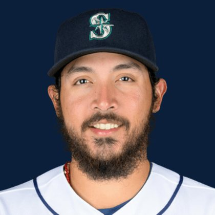

BASEBALLKEEP
Dynasty · Redraft · Diamond
Player File · RP SEA

Andrés Muñoz
#75 · RP · Seattle Mariners · age 27 · B/T RR · 6' 2" / 222 lbs · MLB debut 2019 · Los Mochis, Mexico
Pitching
| Year | G | GS | W | L | SV | HLD | IP | K | BB | HR | ERA | WHIP | K/9 |
|---|---|---|---|---|---|---|---|---|---|---|---|---|---|
| 2026 | 49 | 0 | 5 | 5 | 23 | 0 | 46.1 | 73 | 18 | 6 | 4.27 | 1.21 | 14.18 |
| 2025 | 64 | 0 | 3 | 3 | 38 | 0 | 62.1 | 83 | 28 | 2 | 1.73 | 1.03 | 11.98 |
Plus
- Saves board #15.
- SV+H board #17.
- On 9 boards — not a one-list darling.
Minus
- Reliever volatility: the ninth can vanish in a week.
- Board spread is 116 ranks. You are betting with one camp, not a unanimous tape.
BaseBallKeep Take
Andrés Muñoz is #174 on BaseBallKeep's overall dynasty 300, a 23-source mix anchored by RotoGraphs (Aug 14) and The Dynasty Guru points list (Aug 10). RP for SEA. BK's Pitchers #56. Rest-of-season redraft #180. MLB since 2019. From Los Mochis / Mexico. Bats R, throws R.
BK Value on this rank is 273. Same decaying curve as football: 12,000 at 1.01, a late first a fraction of that. If someone is asking for two firsts, run the calculator. 2026 line: 4.27 ERA, 1.21 WHIP, 73 K in 46.1 IP.
The 23-board average is 172.0 on 9 lists that actually ranked him — unranked sources are skipped, never treated as 999. High 111, low 227.
Dynasty pays the next five years. Redraft pays September. If those two ranks diverge, that is the instruction: hold the kid or cash the veteran.
Flags fly forever. We will refresh this file with The Keep. September baseball is a proving ground, not a coronation.
Every Board
Spread 111–227 · 9 sources
| Source | Rank |
|---|---|
| RotoGraphs Model | 111 |
| Razzball | 168 |
| ESPN | 171 |
| NFBC ADP | 171 |
| ATC ROS | 171 |
| The Dynasty Dugout | 172 |
| FantasyPros Dynasty ECR | 174 |
| FanGraphs The Board | 183 |
| TDG Points | 227 |
On The Keep nearby — Nick Pivetta (#172) · Bryan Baker (#173) · Mike Trout (#175) · Roch Cholowsky (#176)
Same position on the 300 — Cade Smith #84 · Grant Taylor #95 · Louis Varland #115 · Mason Miller #122 · Jhoan Duran #141 · David Bednar #153
All players · The Keep · The Lineup · Pitchers · Calculator